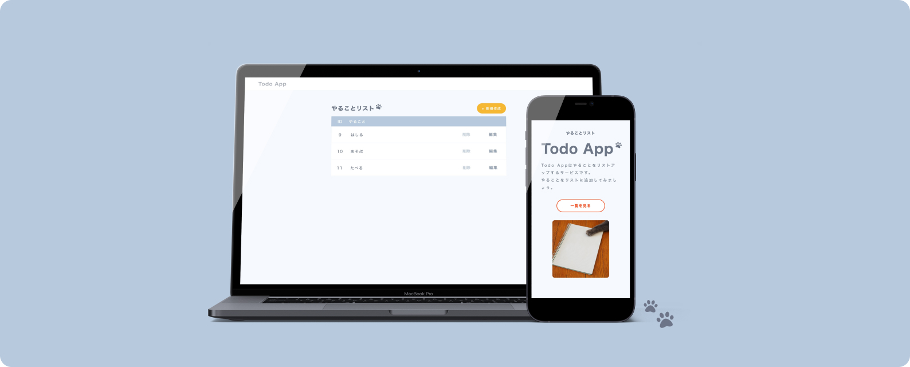

Todo AppWeb App (Responsive)
Web App Create
- View Size対応サイズ
- レスポンシブ
- Create Days実装期間
- 1日間
- Used Technology使用技術
- Node.js・Express・EJS・MySQL
Conceptコンセプト
やることを入力してリストアップできるTodoアプリです。教材を参考にしながら、Node.jsを使用して自身の環境で1から制作いたしました。 リストの内容はMySQLに保存され、一覧画面から新規作成、編集、削除を行うことができる実用性のある仕様となっております。またアプリの仕様を考え、外出先やちょっとした時に使われることが多いことを想定し、モバイルデバイスにも対応したデザインにしております。
Impression制作を通して感じたこと
ローカル環境での制作した簡易的なTodoアプリですが、自身で環境構築から行ったことで、近年主流の開発手段である「サーバーサイドの実行環境」の仕組みについて知ることができました。 必要なものが揃っている教材とは違い環境を自分で用意しなくてはいけないため、途中でつまづくことが沢山ありましたが、ひとつづつ調べながら行いエラーを解消しながら進めていきました。 地道に情報を集めて進めることができた時の嬉しさは大きく、その過程も貴重な経験になったと感じております。 サーバーサイドの技術は新しく便利なものが多い反面、フレームワークも含め膨大な可能性や沢山の工程があると感じ、今後も様々な制作にチャレンジしてみたいと感じました。